Jokhio Interactive
Indie studio · UnityGames and game-ready assets, made in Unity.
Jokhio Interactive is the studio of Najaf Ali Jokhio, a Unity game developer. I build games for PC and create stylised, animated 3D characters and ready-to-play game environments for other developers on the Unity Asset Store and itch.io.
See the assets Get in touchUnity Assets
Ready-to-use animated character packs for Unity (URP & Built-in), also available as FBX for any engine.
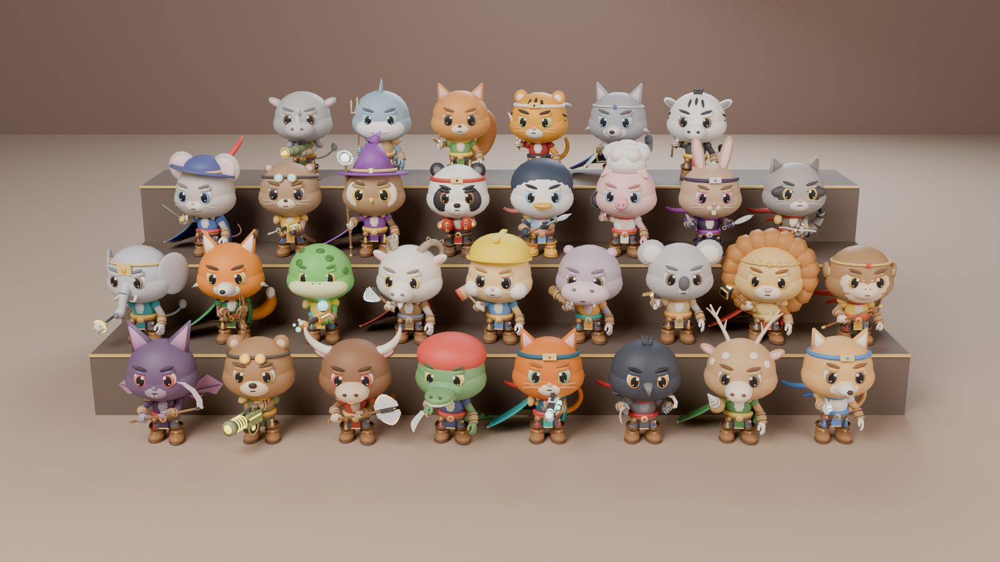
Chibi Fighters – 31 Animated Animal Characters
31 cute but tough animal fighters for third-person shooters, brawlers and party games. Every fighter is rigged, animated and comes with its own weapon.
- 31 characters (cat, fox, panda, rhino, shark, owl, frog, tiger and more)
- 59 shared animations: locomotion, crouch, jumps, dodges, aiming, hit reactions, downed & revive, emotes
- Weapon sets: guns, a heavy bazooka with knock-back shot, swords & shields, bows, katanas, staffs, boxing gloves
- Swappable weapons: any fighter can carry another fighter's weapon
- LOD0–LOD2 meshes and recolourable palette textures
- Works in URP and the Built-in pipeline
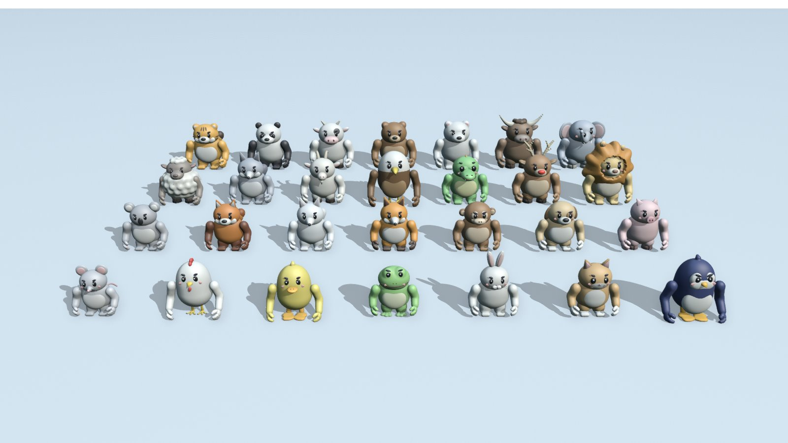
Cute Shooter Animals – 28 Animated Characters
A pack of 28 chibi animal characters built for third-person shooters and party games. Every character shares one skeleton, so all animations work on all of them.
- 28 rigged characters (bear, cat, penguin, eagle, dino, elephant and more)
- 36 animation clips: idle, walk, run, strafe, jump, pistol set, shotgun set, hit, death, victory
- Signature “power-shot knock-back”: the recoil throws the character onto its back
- Detailed hands with finger and thumb bones, hand IK points for weapons
- One shared palette texture and material for the whole pack, with LODs
- 15 swappable accessories (hats, scarves, backpack, jackets) using attachment sockets
Game Environments
Ready-to-play maps with the modular kits they were built from, for Unity (URP & Built-in) and as FBX for any engine.
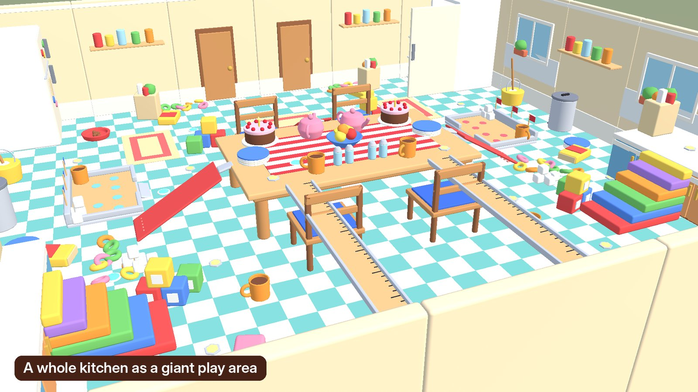
Giant Kitchen – Stylized Kitchen Environment
The floor is a huge open play area with a rug, toy blocks, a pet bowl and spilled cereal; the counters, the sink, the stove and a big open fridge form a second level 9 m up, reached by spatula ramps, drawer and book stairs, a ruler bridge and toaster jump pads.
- Ready-to-play map, about 120 × 120 m (a kitchen room seen from a tiny point of view)
- 42 modular prefabs
- Giant countertops, sink, stove and an open fridge you can walk into
- Spawn, pickup and weapon points on glowing pads
- LOD0/LOD1, colliders, one shared palette material
itch.io Unity Store · soon
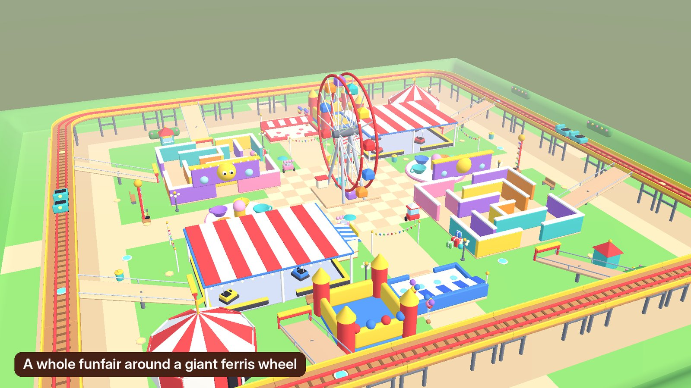
Carnival Chaos – Stylized Funfair Environment
A giant ferris wheel turns in the middle; around it are bumper cars, a teacup ride, a carousel, a bouncy castle, a funhouse maze, a big top tent and game stalls.
- Ready-to-play map, about 184 × 184 m
- 31 modular prefabs
- Giant ferris wheel in the middle
- Spawn, pickup and weapon points on glowing pads
- LOD0/LOD1, colliders, one shared palette material
itch.io Unity Store · soon
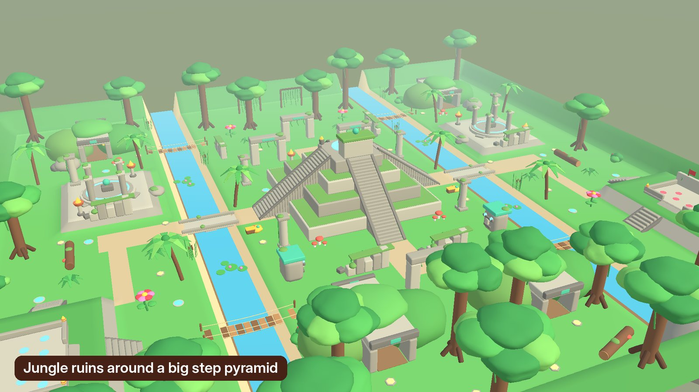
Jungle Temple Ruins – Stylized Jungle Environment
A big step pyramid stands in the middle of the ruins, two rivers fed by waterfalls cut through the jungle, and rope bridges and stone bridges cross them.
- Ready-to-play map, about 184 × 184 m
- 30 modular prefabs
- Step pyramid with stairs on every side
- Spawn, pickup and weapon points on glowing pads
- LOD0/LOD1, colliders, one shared palette material
itch.io Unity Store · soon
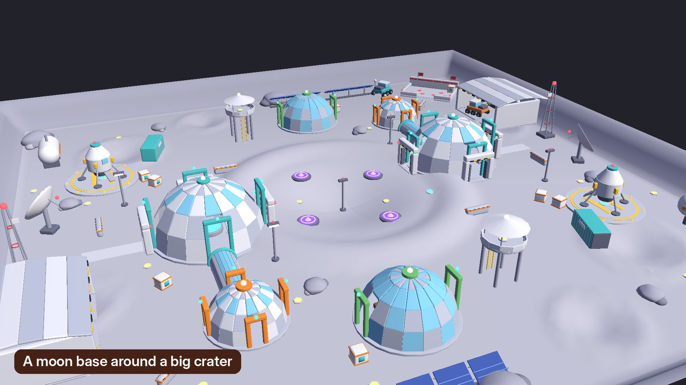
Moon Base – Stylized Lunar Environment
A big crater sits in the middle, with jump pads to climb out. Walk-in domes are linked by tube corridors and airlocks, and there are rover garages with rovers, landing pads with landers, solar fields, comms towers and an observation tower.
- Ready-to-play map, about 164 × 164 m
- 26 modular prefabs
- Walk-in domes linked by tube corridors and airlocks
- Spawn, pickup and weapon points on glowing pads
- LOD0/LOD1, colliders, one shared palette material
itch.io Unity Store · soon
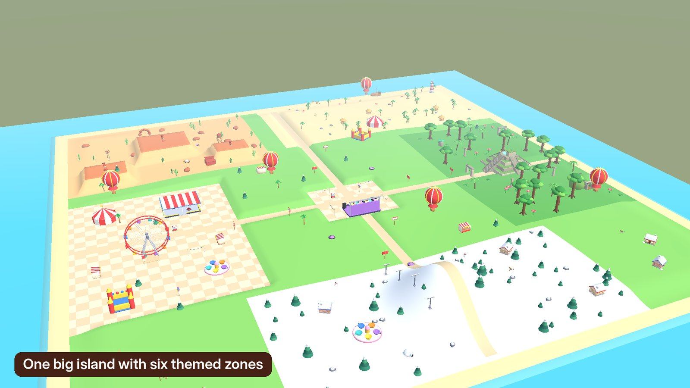
Party Island – Stylized Big Island Environment
A party plaza with a stage sits in the middle; a snowy mountain with cabins and a ski lift rises to the north; a jungle with a step pyramid fills the west; a funfair with a ferris wheel fills the east; desert mesas with a saloon are in the south-east; a beach cove with a lighthouse and a shipwreck is in the south-west.
- Ready-to-play map, about 600 × 600 m (a 480 × 480 m island in a turquoise sea)
- 58 modular prefabs
- One huge island: 6 themed zones joined by roads
- Spawn, pickup and weapon points on glowing pads
- LOD0/LOD1, colliders, one shared palette material
itch.io Unity Store · soon
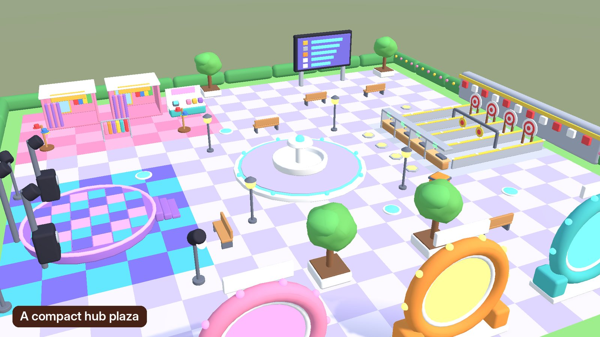
Lobby Hub – Stylized Hub Plaza Environment
A fountain platform sits in the middle, three glowing portal gates line the north side, a shooting range with lanes, counters, targets and a backstop fills the west, a dance stage with spotlights fills the east, and a style corner with wardrobe booths, racks, hat stands and a shop counter fills the south.
- Ready-to-play map, about 80 × 80 m
- 23 modular prefabs
- Three glowing portal gates
- Spawn, pickup and weapon points on glowing pads
- LOD0/LOD1, colliders, one shared palette material
itch.io Unity Store · soon
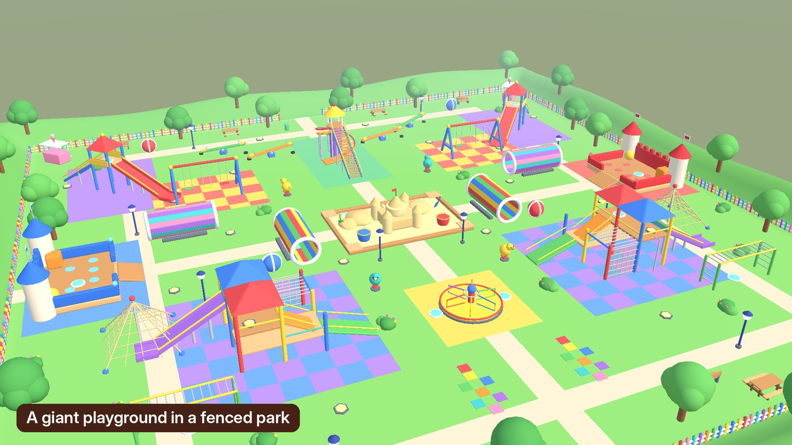
Playground – Stylized Giant Playground Environment
A sandpit with a big sandcastle sits in the middle, a merry-go-round to the north and a spiral slide tower to the south.
- Ready-to-play map, about 148 × 148 m inside a fenced park
- 37 modular prefabs
- Giant slide towers and a spiral slide
- Spawn, pickup and weapon points on glowing pads
- LOD0/LOD1, colliders, one shared palette material
itch.io Unity Store · soon
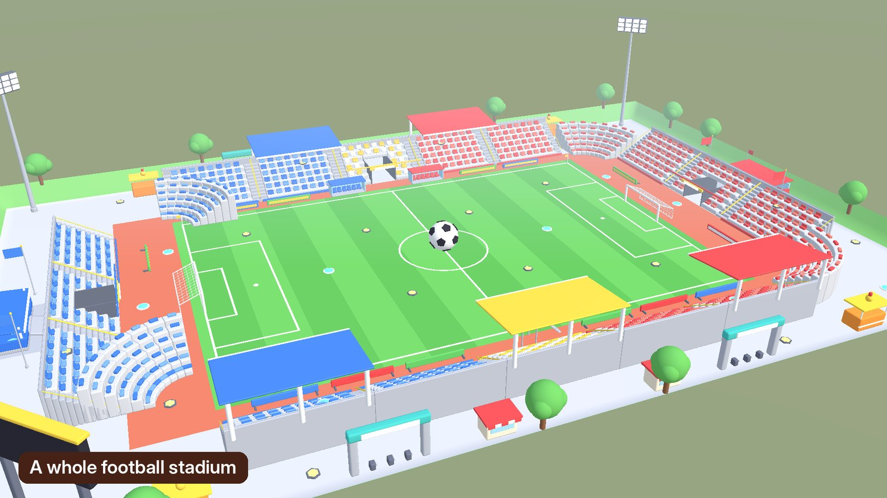
Football Stadium – Stylized Stadium Environment
A full 96 x 64 m pitch with goals and markings sits in the middle, with a giant ball on the centre spot.
- Ready-to-play map, about 176 × 120 m
- 32 modular prefabs
- Full pitch with goals, markings and corner flags
- Spawn, pickup and weapon points on glowing pads
- LOD0/LOD1, colliders, one shared palette material
itch.io Unity Store · soon
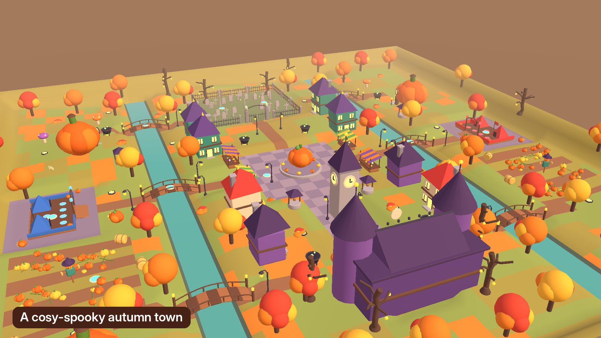
Haunted Pumpkin Town – Stylized Autumn Town Environment
A giant jack-o'-lantern glows in the town square, a big haunted mansion and a clock tower stand to the north and a graveyard with iron fences to the south.
- Ready-to-play map, about 164 × 164 m
- 39 modular prefabs
- Giant jack-o'-lantern in the town square
- Spawn, pickup and weapon points on glowing pads
- LOD0/LOD1, colliders, one shared palette material
itch.io Unity Store · soon
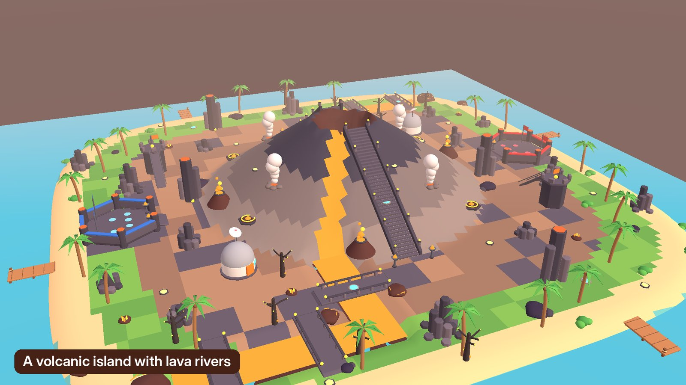
Volcano Isle – Stylized Volcanic Island Environment
A big volcano rises in the middle with a glowing lava crater and lava flowing down its slopes; two big basalt stairways climb to the rim. Two lava rivers cross the plains toward the sea and are crossed by basalt bridges.
- Ready-to-play map, about 184 × 184 m (island in the sea)
- 27 modular prefabs
- Volcano with a glowing lava crater and lava flows
- Spawn, pickup and weapon points on glowing pads
- LOD0/LOD1, colliders, one shared palette material
itch.io Unity Store · soon
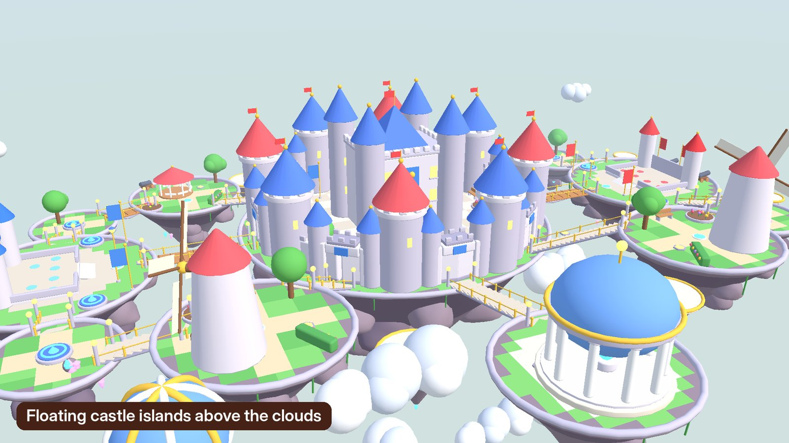
Sky Castle – Stylized Floating Castle Environment
A big castle courtyard island with a keep, round towers, walls and eight gatehouses floats in the middle. Around it float two base islands, garden islands with a windmill and a gazebo, a sky temple island and a fountain island, plus small stepping islands.
- Ready-to-play map, about 160 × 152 m of floating islands
- 42 modular prefabs
- Floating castle courtyard with a keep, towers, walls and gatehouses
- Spawn, pickup and weapon points on glowing pads
- LOD0/LOD1, colliders, one shared palette material
itch.io Unity Store · soon
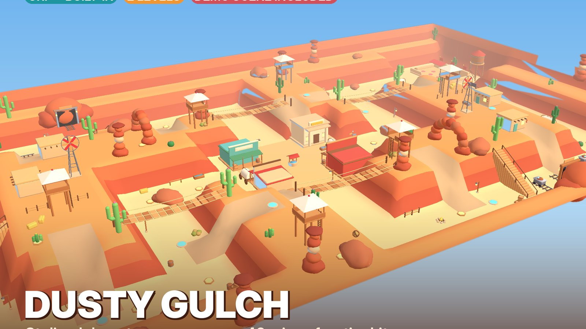
Dusty Gulch – Stylized Desert Canyon Environment
Straight-walled canyons cut into flat red mesas, with a frontier town square, an old mine, lookouts and rope bridges between the two levels.
- Ready-to-play map, about 192 × 112 m, point-symmetric layout
- 40 modular prefabs: saloon, bank, water tower, windpump, hoodoos, cacti
- Spawn, pickup and weapon points on glowing pads
- LOD0/LOD1, colliders, one shared palette material
itch.io Unity Store · soon
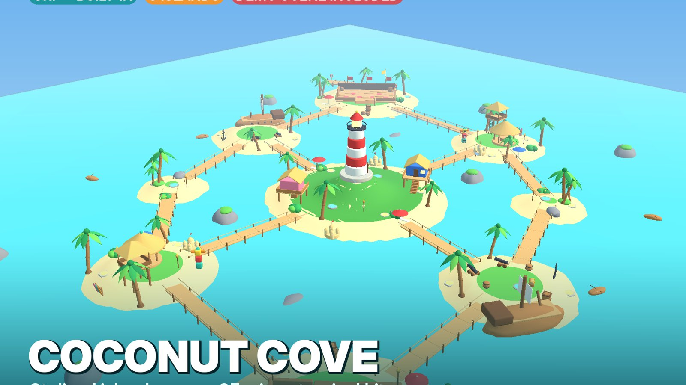
Coconut Cove – Stylized Tropical Island Environment
Nine sunny islands in a turquoise sea, linked by plank walkways, with a lighthouse, tiki huts, stilt houses and a beached shipwreck.
- Ready-to-play map, about 150 × 150 m, point-symmetric layout
- 35 modular prefabs: palms, huts, docks, lighthouse, shipwreck, cannons
- Spawn, pickup and weapon points on glowing pads
- LOD0/LOD1, colliders, one shared palette material
itch.io Unity Store · soon
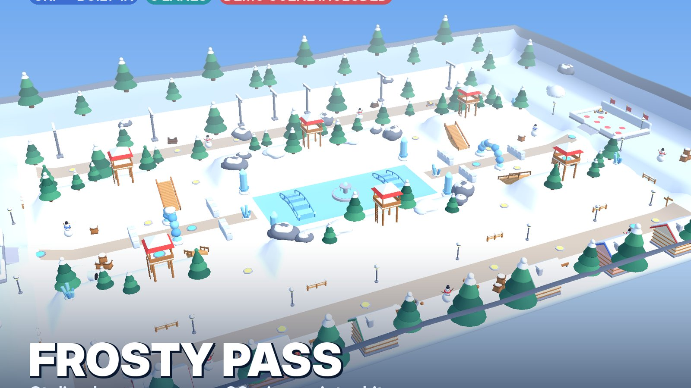
Frosty Pass – Stylized Snow Environment
A snowy mountain pass with three lanes: a log-cabin village, a frozen lake with ice bridges, and a pine forest under a ski lift.
- Ready-to-play map, about 168 × 106 m, mirrored layout
- 36 modular prefabs: pines, cabins, igloo, watchtower, ice arches, snowmen
- Spawn, pickup and weapon points on glowing pads
- LOD0/LOD1, colliders, one shared palette material
itch.io Unity Store · soon
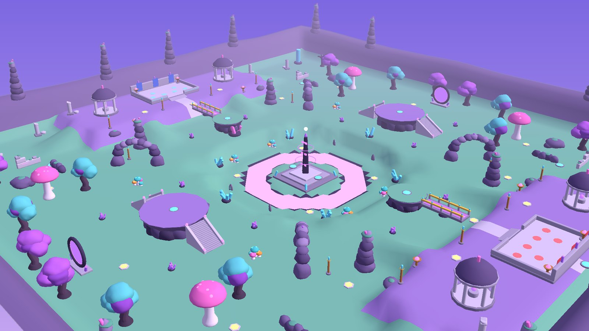
Amethyst Hollow – Stylized Fantasy Environment
A magical hollow of purple rock, glowing crystals and giant mushrooms, built in a soft, rounded, toy-like style. Three height levels, floating islands and crystal bridges.
- Ready-to-play map, about 142 × 142 m, mirrored layout
- 33 modular prefabs: crystals, rock arches, mushrooms, glow trees, shrines, portals
- Spawn, pickup and weapon points on glowing pads
- LOD0/LOD1, colliders, one shared palette material
itch.io Unity Store · soon
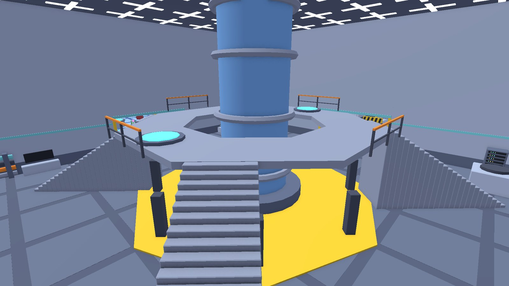
Star Cruiser – Low Poly Sci-Fi Interior
The inside of a star cruiser: nine rooms linked by corridors, from the hangars and the two-storey reactor room to the bridge and the engine room.
- Ready-to-play indoor map, about 128 × 76 m
- 41 modular sci-fi pieces: walls, doors, catwalks, consoles, reactor, shuttle
- Fully enclosed with colliders on walls, ceilings and windows
- LOD0/LOD1, one shared palette material
itch.io Unity Store · soon
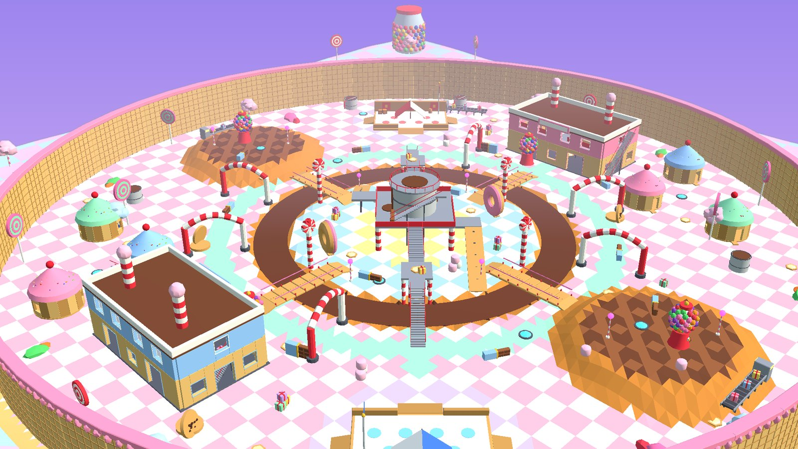
Candy Factory – Low Poly Candy Environment
A round candy arena closed by a wafer wall, with a chocolate ring, the Mixing Tower in the centre, factory halls, fudge hills and cupcake villages.
- Ready-to-play map, about 145 m across
- 38 modular candy pieces: towers, halls, lollipops, gumball machines, cupcakes
- Raised catwalks, bridges and high ground
- LOD0/LOD1, one shared palette material
itch.io Unity Store · soon
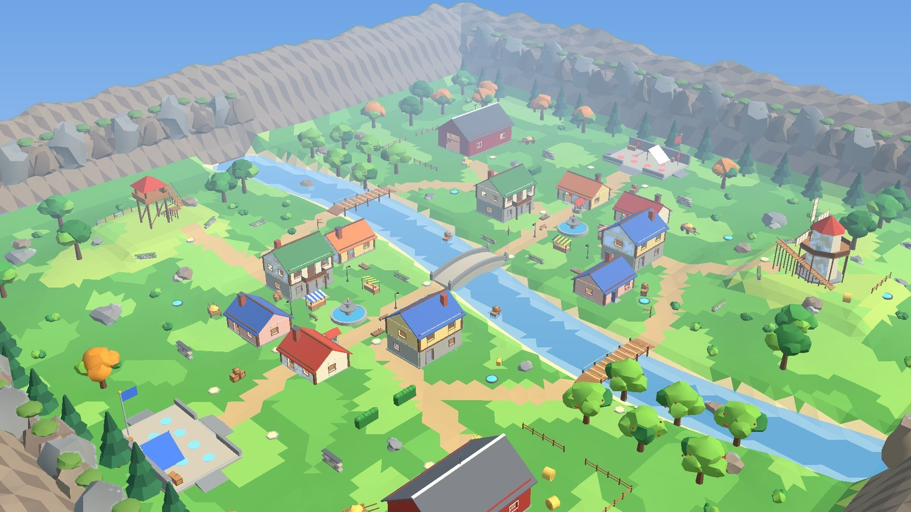
Sunny Meadow Village – Low Poly Village Environment
A sunny countryside village split by a river, with stone and wooden bridges, a market plaza, a windmill, a barn and farm fields.
- Ready-to-play map with river, bridges and hills
- Modular village kit: houses, barn, windmill, watchtower, fences, trees
- Spawn, pickup and weapon points
- LOD0/LOD1, one shared palette material
itch.io Unity Store · soon
Games
Released work.
Blackmere
A dark 2D action-adventure set in a sealed fortress that only reveals its layout while you probe it: 21 chapters, four weapons and no map. Developed by Najaf Ali Jokhio, published by Casayona Studio.
View on Steam